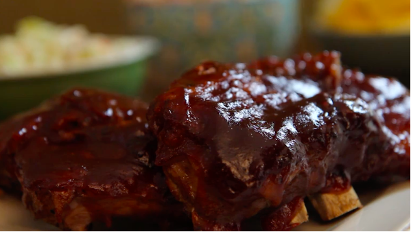

Slow Cooker Ribs

Zap Zoop! These freaki deakies will light up your life
Ingredients
- Ribs for about 6 regular people or 3 major mondos
- Seasonings: Salt and Pepper
- 1/2 cup of water
- Garlic and Onion
- Barbecue Sauce: Whatever kind you like
Directions:
- Step 1: Add all the ingredients (besides the sauce) to the slow cooker.
- Step 2: Cook on Low for 8 hours or High for 4 hours.
- Step 3: Coat the ribs with sauce and bake until the sauce caramelizes.
Thats it!
Back to Main Page